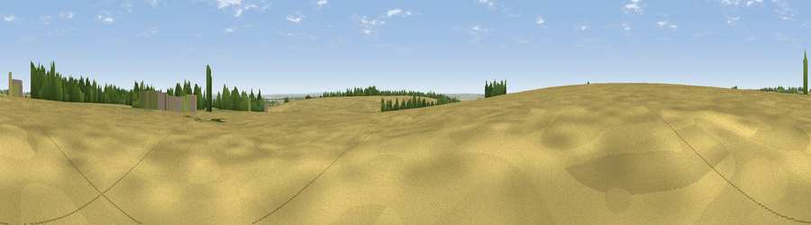

Viewpoint near Brantingham
#30503 in England · top 52% of its area beats it · near BrantinghamWhere it is
The exact computed spot (SE 95288 32108). Click the marker for map links.
The view, rendered

A 360° render of this exact spot computed from the terrain model, tree cover and land cover — summer colours, afternoon light, calibrated against photographs of famous viewpoints. Real trees, hedges and buildings will differ in detail.
The panorama
Grey silhouette: terrain skyline in each direction (720 bearings, Earth curvature and refraction included). Dashed green: skyline with trees (+15 m) and buildings (+8 m) as obstacles. Blue strip: how far the ground is visible on each bearing.
Where the view opens
Wedge length = distance to the farthest visible ground on that bearing (vegetation-aware). Rings at 10, 25 and 50 km.
What fills the view
83% cropland · 9% grassland · 3% built-up · 3% woodland · 1% water
Angular shares of the visible panorama (visual magnitude), not map area. Landscape diversity 0.29 (0–1 Shannon).
Key numbers
More beautiful places nearby
The staircase of upgrades: each row has a higher view potential than everything closer. Driving times are estimates from straight-line distance, calibrated against real road routing — check an actual route before setting out.
| Place | Direction | Drive | Score |
|---|---|---|---|
| Viewpoint near Brantingham | SSE · 1 km | ~3 min | 43.4 |
| Viewpoint near South Cave | WNW · 2 km | ~6 min | 60.9 |
| Viewpoint near South Newbald | NW · 3 km | ~8 min | 62.3 |
| Viewpoint near South Newbald | WNW · 3 km | ~8 min | 64.9 |
| Viewpoint near Nunburnholme | NNW · 18 km | ~31 min | 68.5 |
| Viewpoint near Millington | NNW · 25 km | ~41 min | 69.7 |
| Viewpoint near Bishop Wilton | NNW · 27 km | ~43 min | 71.5 |
| Garrowby Hill (A166 crest) | NNW · 29 km | ~45 min | 71.9 |
53.77660, -0.55553 · source: osm peak · position refined by local search. Computed location — check access rights before visiting.